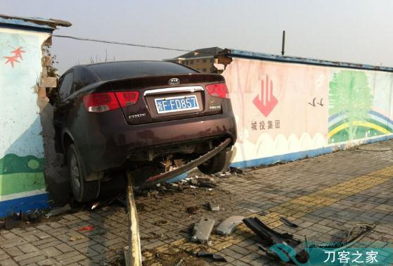

赞助商

Copyright Wehaha.com Rights Reserved. 闽ICP备12016244号
Powered by Z-blogPHP
最近几天，我在朋友圈中说了一些话，都是隐喻，因为不能讲的太清楚，风紧，如果仔细研究了今天和以后的几篇文章，自然而然就清楚了。但同样，也不可能讲的很直白。
约两年前，我写那只“算盘”的时候，很多人也不理喻。当时，正是“里加成”开始抛售资产的时候，现在老人家已经坐下来喝茶了，可是一些洋鬼子却被晾在沙滩上，想走也走不了，领先一两年，就是如此不同。也有人说，随着英镑的下跌，里加成遭受了损失，但是，你看看他一系列的收购行动，如果不是英国很需要的时期，英国政府能同意收购那些公共资产吗？（电力、燃气等）想都别想！里加成现在收购的资产未来必定成宝。精明的商家，任何大笔的收购，都需要在一个国家需要的关头来进行，不在乎短期的得失。现在很多人按几天的汇率涨跌来评论别人的行为，只能是鼠目寸光。
27年前那个著名的夏天之后，里加成上演过精彩的一幕，现在不过是在英国重复几乎同样的故事。那个著名的夏天之后的内容，大家不要问，也不便回答，心知肚明即可。
里加成的收购是战略收购，看的是未来十年以上甚至二十年！或许我们还会看到那时候（可惜没有那么多的篇幅解释这些内容）。
有时，如果要实现一两年以后的目标，是要放弃一些短期机会的。里加成自然没得到本轮房地产价格上涨的收益，但那是必要的，也符合他不吃鱼尾的原则，刺太多，如果他吃了，他现在也被晾在沙滩上。
这对我们每个人都有启示，如果对未来一两年有一个清晰的目标（预计），就需要放弃一些短期行为，执行自己的目标。比如现在，绿纸如果要飞出去，比较难了（小规模或有可能，大规模的基本不可能了），但从家猪变成野猪还比较容易。在政策善变的村庄，必须未雨绸缪。
在《面向中产的“微笑”》这篇理论文章中，已经说明了一些原理的重要性，很多时间窗口不会重复出现，稍纵即逝。
书归正传。
美国是当今世界工业能力最强的国家，因为创新能力最强，为什么美国还要持续保持世界上最强大的农业能力？
或许有人说，美国有丰富的自然资源，有利于保持自己的农业发展，但是，你再看看已经完成工业化的日本、德国、法国、英国、荷兰，他们的自然条件有的好，有的差，为什么也要拼命保持自己的农业具有很高的水平？降低对外依存度？
放弃农业的仅仅是极个别迷你国家或地区，新加坡是典型的例子。
如果要放弃农业进行工业化，必须满足几个条件：
其一，国家不能大。也就是说，农产品消耗占世界很小的比例，不会造成世界农产品价格的波动。大国如果负责这些小国的供给，不会有什么负担（这是很严重的一句话，包括那些气候极度恶劣的时期）。如果是中印这样的国家放弃农业，气候恶劣的时候谁也养不活，这是很显然的道理。
其二，他必须与那些农业生产强国保持友好关系。新加坡是个异类，在东南亚国家中与西方国家的关系最好，特别是美国，在南海问题上最明显。除了借助美国的军事能力保护自己的国家安全和经济安全（马六甲海峡的稳定）之外，农产品也必定是他一个重要的考量。如果一个大国，农业丰产时期可以出口，欠产时期就没有能力出口，这对新加坡这样的国家是没有意义的，他需要的是稳定、常年的供应，即便气候严重恶化的时期也可以做到，同时还要遵守承诺，在当今的世界，也只有美国最有保证。签约精神很强，农产品的供给能力最强。基于上述内容，新加坡总是愿意承担美国在一些国际事务中的马前卒，这根本不奇怪，是由一个国家的战略定位所决定的。
美国与新加坡之间的关系，估计任何国家都无法影响，即便明天换成你当总理也一样。
第三，新加坡必须保持自己的国际收支平衡。因为无论和谁建立长期友好的关系，保证自己的农产品供给，但最终都需要拿钱去买的，国际市场上没有雷锋。为了保证自己的国际收支平衡，要求新加坡必须做到如下两点：
1，政府必须保持高效率。决定一个国家工业和服务业国际竞争力的最主要因素之一是社会管理成本，其中包括表观税赋、隐形税赋。表观赋税很好说，就是你交的税在产品中占的比例，会计随时可以计算出来，这是国家拿走的，用于国家的管理成本。很明显，国家的管理效率越高，税负水平越低，你的产品国际竞争力就越强。隐形税赋包括什么？包括经常说的超级地租、通胀水平（铸币税）、贪污纳贿等企业所承担的成本（很多国家的隐形税赋超过表观税赋，所以，他们永远是世界上的落后国家），这个隐形税赋水平越低，产品和服务的国际竞争力就越强。所以，新加坡如果要保持自己的工业和服务业在国际上占有竞争的优势，就必须保证自己的政府廉洁高效。
2，新加坡必须保持开放自由的氛围。因为创新才是国际竞争力的根本源泉。而创新体现在教育。学术自由的大学和科研机构、富有创新精神的人们，才能保持创新的动力，这要求新加坡必须具有自由的社会氛围，这是一个国家保持国际竞争力的基础。因为靠几个官员是无法保持自身经济的国际竞争力的。
当满足以上条件后，新加坡这样的国家就可以放弃农业，进行完全的工业化。工业和服务业在国际上的竞争力越领先，自己的工业基础也就越牢固。因为粮食也有供不应求的时期（比如严重的自然灾害来临时，必须出得起高价钱，供给才有保证），那时，国际竞争力越强，国际收支越有保证，越能出高价，自己的农产品供给就越有保证。
相反，如果新加坡在以上任何一个环节出现了问题，粮食供给出现困难，而自己没有农业，人们要么都跑了，要么就只能买条渔船下海打鱼，新加坡这个高度工业化的国家也就不复存在，工业化就成为云烟。换句话说，是稳定的农业供给（工业与服务业的国际竞争力和良好的战略选择），支撑着新加坡的工业化。
本村也有新加坡问题研究机构，不知道他们是否看到了新加坡的立国之本。
但新加坡的模式仅仅是特定的，当一个国家的人口超过几千万的时候，这种道路就根本不可能。气候的暖周期，全球粮食供给有保证，这时还好说，即便出现三五成的供给缺口，都可以通过国际市场满足（前提是具有国际支付能力），当全球性灾荒来临时，世界各国都面临紧张局势，大家都会封锁出口稳定自身的供给，进而保证自己政府的生存和社会稳定，谁能大规模出口？此时，这些农产品进口依存度很高的国家就会陷入严重的动乱，通胀就会高烧不止，而高涨的通胀不断持续，最终就会摧毁自身的工业基础，这已经在《面向中产的“微笑”》说到，在《如松看人权货币》和《如松看货币之道》中都有基础的原理。换句话说，无论这些国家的工业化水平有多高，只要农产品供给造成的通胀高烧不止，最终就会摧毁自己工业化的基础，倒退回农耕社会（生存永远是第一位的）。当然，如果自身的货币没有信用，也会造成通胀长期高烧不退，也一样摧毁工业化。阿根廷和俄罗斯都是如此回家的，阿根廷从工业化的发达国家回到了农业社会；俄罗斯也从苏联时期的工业化国家重新成为土特产小卖部。长期的通货膨胀就是工业社会最大的敌人，无论这种长期的通货膨胀是由货币信用低造成还是农产品供给形成。
这也就可以看到很多国家的战略。现在的发达国家，除了特别的小国之外，大家都对自身的农产品采取强力保护措施，日本和美国关于TPP谈判之所以非常艰难，主要就是农产品；欧盟也对美国的农产品时刻保持警惕态度，对那些转基因作物更是心有余悸。他们的目的只有一个，保护自身的农产品自给能力，工业化越强的国家，往往对自身农业的保护力度越强，因为他们知道，农业是工业的根本支撑！工业化绝对不能以伤害农业作为代价。
这样长期扶持农业是要付出很大代价的。自从1980年以后，气温缓慢上升，农产品的供给有保证，而保持自身农业的生存与发展，是需要巨大投入的，因为农业是效率很低的劳动（与工业相比，前些年农民工不断进城，就是因为工农业剪刀差），国家必须给予政策倾斜和照顾，全社会必须自觉从环境上保护河流、土地等农业基础，需要付出巨大的代价（影响工业发展）。可为什么工业化的国家一定要在这样的时期全力保护自己的农业？因为他们知道，气候无常，当气候不再如此温柔的时候，如果没有强大农业，一旦农产品供给出现缺口或严重依赖于人，就会彻底摧毁自己的工业化，任何一个有清晰战略的国家都能冒险。
同时，几乎所有的工业化国家都力图保持自身的货币信用。目的都是不让货币信用崩溃形成长期的高通胀，威胁自己的工业化，否则就会“一夜”变穷。
长期的通胀就是工业化最大的敌人，无论是显性的还是隐性的（比如物价管制，将超发的货币引入特定的领域等）。
工业、农业是一体，任何一个国家的工业和农业供给能力必须保持平衡，否则，国际政治军事局势出现恶化、自身产业的国际竞争力出现波动（任何一个国家都避免不了，因为国际竞争力与劳动力结构也有关）、气候恶化的时候（注意这三个条件，这是三个要命的条件），一旦形成长期的通胀，数十年工业化的成果就会丧失殆尽，回到贫穷！
希望您还记得美国总统候选人曾经说过的一句话。
农业文明是一种低级文明，因为他依托的是地域和封疆的概念，庄园主、领主甚至一家一户，都是人治，以自我为中心，以权力为纽带来构建。而工业文明需要依托全社会的信用来构建，法律是构建社会的基石（权力回家），只有如此，才有货币的信用。同时，全社会必须建立照顾弱者的氛围，因为农业本身就是弱者（生产效率比较低），如果全社会不从分配体系、每个人自愿参与的环境治理等方面保护农业的基础，农业崩溃就会带来工业化的崩溃。信用与农业是工业文明的基石所在。
所以，工业文明是一种社会治理水平的巨大提升，更是全社会道德水平和文明水平的大幅提升，否则就无法支撑工业文明，只能倒退回小农经济。
光荣革命之后，英国建立了《权利法案》，为什么受到资本主义的推崇？因为他将社会的信用体系构建了起来（法律至上），又通过削减君主的权力（君权不再是代天行事）构建全社会人人平等的观念，这才推动大西洋两岸的工业革命如火如荼地发展了起来，当今的发达国家基本都是在那时撞墙成功！进入工业文明。
但也有相反的例子，就是前文说到的阿根廷和苏联，如果你仅仅依靠提高识字率，多修几条公路，多建几座高楼就以为实现了工业化，而不能构建以法律为核心的社会架构（实现信用治理社会），建立以人人平等为内容的社会基础，依旧抱守等级制度，自然在工业文明的大墙上撞得头破血流，该卖土特产继续卖土特产。
我对未来比较悲观，当一国的央行持续和持币者玩套路的时候，意味着央行只是印刷厂，而不是信用加工厂，说明这样的社会治理不能支撑工业文明。当一个社会的人们总希望榨取别人的时候（炒房子就是希望套取别人将来几十年的劳动，就是榨取），不能总体上去扶持弱者（看看那些因为贫穷而自杀的报道，不能照顾弱者的社会是无法稳定的，动荡的社会没有工业化），很多官吏希望榨取别人为自己服务，他就不具有支撑工业文明的基石！
阿根廷撞墙，俄罗斯撞墙，后面还会有人撞墙，而且撞得更惨！因为农业基础本身就非常薄弱。
该去哪里去哪里。
国际政治军事局势出现恶化、自身产业的国际竞争力出现波动、气候恶化的时候，就是终结假工业文明的杀手，它正在来临，明天接着说。
为了方便，明天还是以小村故事的口气说话，有些朋友会觉得读起来不方便，但也没办法，因为谁也不喜欢被别人攥住自己的卵。
昨晚思绪大开，写兴大起，很快就写了一万余字。后来想想，这完全可以写成一本书，对一个民族的前途、对周围的朋友都有长期的意义和短期的现实意义，也一定可以流传很久。但一想到咱还是猪栏里的家猪，写出来之后可能就要吃肉了，顿失泄气，洗洗睡吧。
但到此，很多人也应该明白自己未来一两年该怎么做了。
如松书目：
<如松看人权货币>http://product.dangdang.com/23950476.html
<如松看货币之道>http://product.dangdang.com/23708217.html


Copyright Wehaha.com Rights Reserved. 闽ICP备12016244号
Powered by Z-blogPHP
已有21位网友发表了看法：
一是当初人民公社，出工不出力，导致农作物产量低，人民吃不饱。就是那样情况下还鼓励多生，把计划生育建议人打成右派，确实脑残。
二是包田到户一家一户一亩三分地，只能吃饱，甚至吃饱都困难，所以不可能富裕，最可能的结果是共同贫穷，除非你认为吃饱就是富裕，如果你一直在那一亩三分地上耕耘，穷死你！
三，确权流转，也就是目前做的，一点点零碎的土地，要想集中规模经营太困难，如果正常流转，实现规模经营可能最少几十年！
既然村集体所有，那么村领导班子就是代表村民行使经营权，然后至于怎么经营可以根据实际情况进行，前面已经说过了，既然一家一户一亩三分地不行，你还从法律上确定，确定有意义吗？一种抬头就见南墙的形式，你怕南墙根淌血不够多吗？
经营之后，可以分享经营成果，不用每个人都去种地，比如承包给大户可以获得承包费，跟现在拿着@@获得一定专包费不是一样吗？再就是合作社形式，大家技术等资源共享，共同发展，也是农业发展的一种更高级的形式。
碎片化的农村，因为农民土地情节太重，有多少比例是宁愿撂荒也不转的？种地不挣钱有多少愿意经营的？更惨的状况可能就在眼前。长远影响远远大于一点点灵活流转带来的好处！
在【如松：“她”的心思你懂吗？ 】内我已提醒英国公投引发全世界汇率归位，如松好像对这方面不感兴趣文章所提甚少。其实大唐与英国或许早已因为香港而绑在一起，要研究唐币必须研究英镑，要研究英镑则需重点关注取代它地位的美国。大唐在黄金周内出大招关门冻市随后大英下挫千二点，前后不过几天而已，这不像巧合更像里应外合。
发表评论